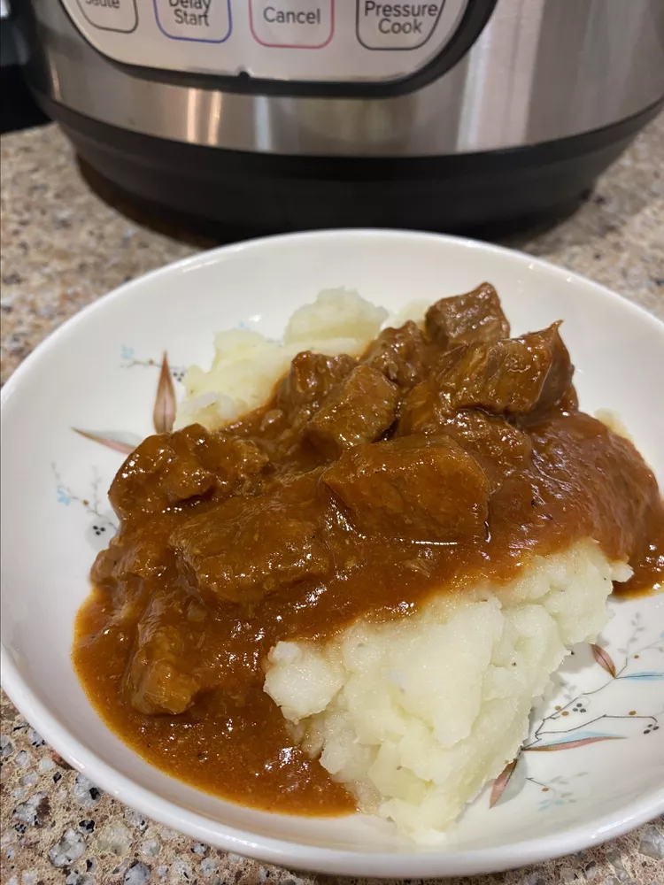

Pot Beef Paprika

Ingredients:
- 2 tablespoons olive oil
- 2 pounds cubed beef stew meat
- 1 pinch salt and ground black pepper to taste
- 2 cloves garlic, minced
- 1 cup diced onion
- 1 ½ cups water, divided
- ¾ cup ketchup
- 2 tablespoons Worcestershire sauce
- 1 tablespoon brown sugar
- 2 teaspoons salt
- 2 teaspoons smoked paprika
- ½ teaspoon dry mustard
- ⅛ teaspoon cayenne pepper
- 1 dash hot pepper sauce (such as Tabasco®)
- 2 tablespoons all-purpose flour
Steps to Make:
- Turn on a 6- or 8-quart multi-functional pressure cooker (such as Instant Pot) and select Saute function. Add olive oil and meat, season with salt and pepper, and saute in batches until browned, 5 to 7 minutes per batch. Remove meat to a plate. Add onion and garlic to the pot and cook until tender and fragrant, about 5 minutes.
- Return meat to the pot and stir in 1 1/4 cups water, ketchup, Worcestershire sauce, brown sugar, salt, paprika, dry mustard, cayenne pepper, and hot pepper sauce. Cancel Saute function.
- Close and lock the lid. Select high pressure according to manufacturer's instructions; set timer for 15 minutes. Allow 10 to 15 minutes for pressure to build.
- Release pressure using the natural-release method according to manufacturer's instructions, about 10 minutes.
- Blend remaining 1/4 cup water with flour in a small bowl. Gradually stir into the meat mixture and select Saute function. Heat until thickened, about 5 minutes.